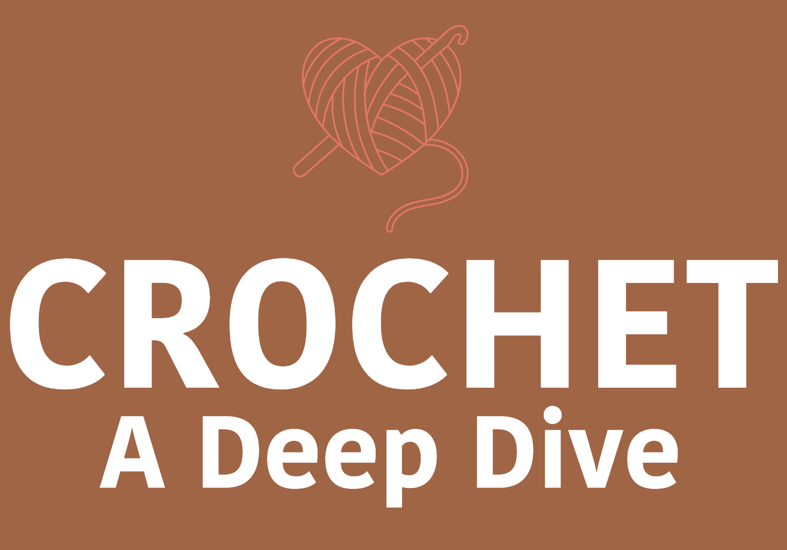

Microsite:
Creative Director
A microsite wiki for the band, utilizing HTML and CSS to design and structure the web pages, providing comprehensive information about the band's history and discography.

Microsite:
Designer/Developer
A microsite wiki for crochet enthusiasts using HTML and CSS, incorporating user-friendly navigation and visually appealing layouts to showcase a comprehensive collection of crochet origins, facts, and tips.